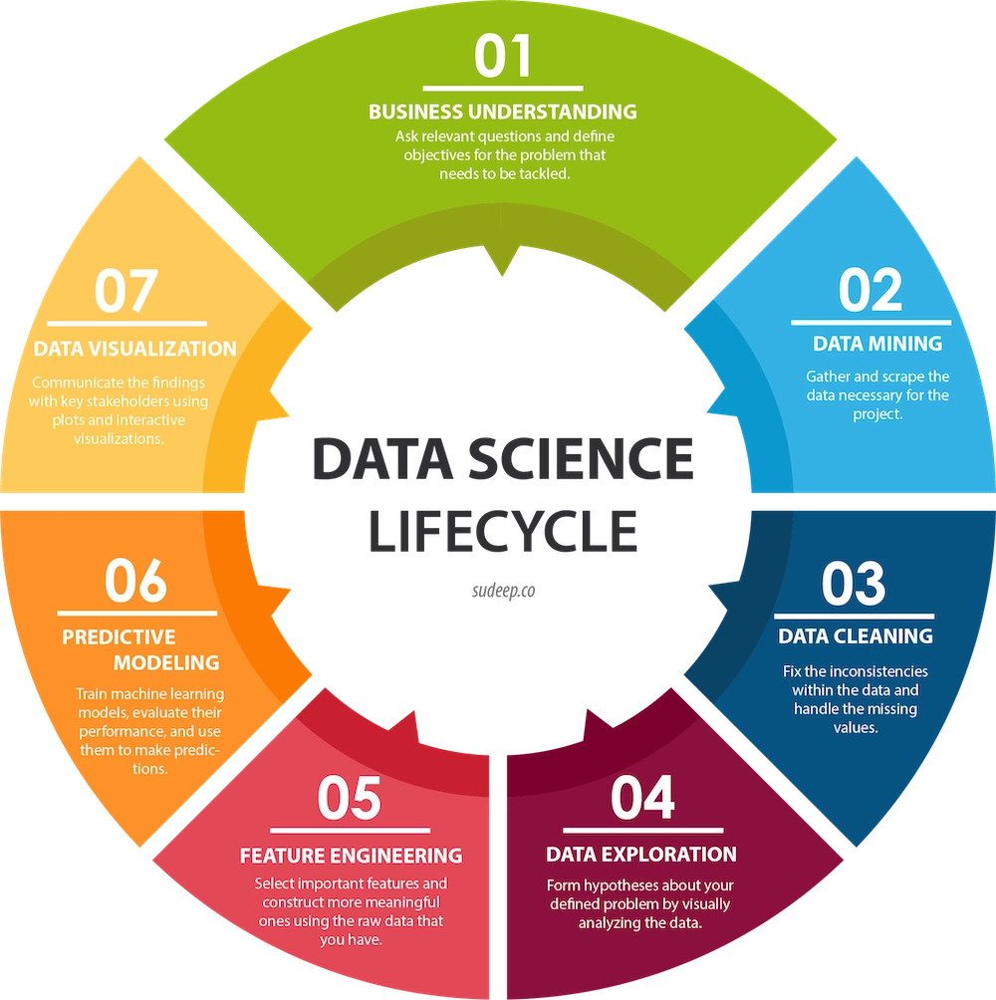

Le métier de Développeur Data / IA est au carrefour du développement logiciel classique, de l'ingénierie des données et de l'intelligence artificielle. Contrairement au Data Scientist qui crée des modèles mathématiques complexes, le développeur Data/IA conçoit, intègre et déploie des applications concrètes qui exploitent ces modèles pour répondre aux besoins des utilisateurs.
|  |